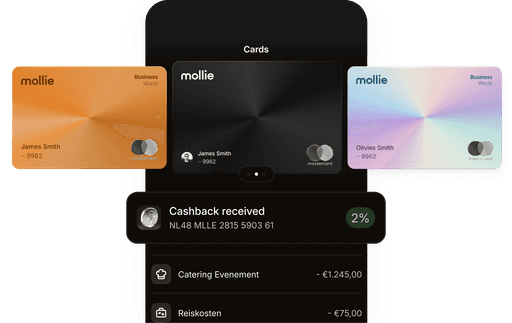

从收单到对账一条链：我用 Mollie 把欧洲电商的支付流程跑通了
面向欧洲市场的小团队做跨境电商，支付环节最头疼。我把 Mollie 嵌进现有工作流，从结算页到报表导出全流程打通，少了三次手动复制，财务同事终于不用天天对账到深夜。
每个月十五号前后，我们团队的微信群都会出现几张截图——财务同事贴出 Excel 对账单、银行交易流水、PayPal 后台导出的 CSV，然后问一句"这三笔对上没有"。这是我们做欧洲电商的传统仪式。
以前这条支付到对账的流程，散落在至少四个工具里：前端结算页是自己写的（为了省 PCI 合规那堆事），PayPal 单独接了 SDK，荷兰本地客户走 iDEAL 又是另一个接口，结算到银行的环节要看两个后台。每到月底合并数据是一场噩梦，少一笔都要翻四个后台查半小时。
这套流程卡了我们快一年。直到上个月把 Mollie 拉进来——它的官网上把欧洲支付能力写得清清楚楚，整条链才真正跑通。
旧流程到底卡在哪
说具体问题：
卡一：支付方式太多，每种一个接入。 我们做荷兰和比利时市场，客户习惯 iDEAL 和 Bancontact，但偶尔也有 Visa/Mastercard 进来。以前每种方式都要单独对接 SDK、单独写回调逻辑、单独存交易记录。新增一种方式意味着开发周期至少一周，改回调逻辑还要部署、测、再部署。
卡二：数据散在各处，对账靠人肉拼。 PayPal 的 CSV 导出格式和 iDEAL 的不一样，银行流水又在另一个系统。财务同事要手动把三份数据合并到一张表里，按交易时间和金额逐条匹配。旺季一个月几千笔交易，这事能占掉她整三天。
卡三：团队多人协作权限乱。 老板想看日流水，但又不想让运营碰 API Key；开发要配 Webhook，但财务又需要导出报表。以前共用一个账号密码，谁登录了做了什么完全没记录，误操作了也追不回来。
这三个问题不是孤立的——接入多了数据自然散，数据散了就没法协作，协作乱了又加剧接入混乱。是时候找一个能兜住整条链的东西了。
新流程：把 Mollie 插进三个关键环节
现在的流程里，Mollie 是中心节点，我们把原来散的几个工具串了起来。整条链是：
- 客户在网站选商品 → 跳转到 Mollie Checkout 结算页 → 付款完成回调
- 交易数据自动进 Mollie Dashboard → 财务每周导出一次 CSV → 导入会计系统
- 开发用 Mollie API Key 配 Webhook → 订单系统自动更新状态
说说每个环节具体怎么接的。
环节一：结算页——把控制权交出去
我们以前自己写结算页，为的是能完全控制 UI 和交互。但欧洲法规里的 3DS 验证是强制的——每笔卡类交易都要判断要不要触发 3DS、处理跳转、解析结果。这套逻辑自己写的话，不仅复杂还容易踩合规红线。
现在换成了 Mollie Checkout。从官方下载拿到 SDK 集成进订单系统后，做法很简单：创建一笔 Payment，拿到 checkout_url，302 重定向过去就行。Mollie 负责展示所有启用的支付方式、处理 3DS、处理回调。客户付款完成后，Mollie 会 POST 一个 payment.paid 事件到我们配置的 Webhook URL，我们的订单系统接收到这个事件就把订单状态改成"已支付"。
选支付方式这一步，我们只在 Dashboard 里勾了五种：Visa/Mastercard、iDEAL、Bancontact、PayPal、Klarna。排序是 iDEAL 放最前面（荷兰市场转化率最高），然后是卡类。Mollie 会自动把 Logo 和本地化界面渲染出来——iDEAL 客户看到的是荷兰语界面，Bancontact 客户是法语。我们一行代码都没写。
这一步省掉了什么？原来对接五种支付方式大概要写 2000 行代码，现在只需要创建 Payment 时传一个 methods 数组。3DS 的合规压力也没了——Mollie 自动判断、自动处理、自动把结果回传，我们只管等事件。
环节二：数据出口——一个后台搞定所有交易
这是 Mollie 进来后变化最大的地方。原来我们要从 PayPal 后台导 CSV、从银行网银导流水、从 iDEAL 商户平台导记录，三份数据格式不一、字段不全，还要手动对齐。
现在所有交易——不管客户用的是 Visa、iDEAL 还是 Klarna——全都在 Mollie Dashboard 的交易列表里。财务同事每周一次，进去点导出，拿到的 CSV 里每一行都是一笔完整交易：交易时间、金额、支付方式、状态、Mollie 收取的手续费、预计结算日期。

这份 CSV 直接能扔进我们的会计系统（QuickBooks），字段名完全对得上。原来需要三天的对账工作，现在大概二十分钟。
关于手续费这块，我得单独提一下。Mollie 的定价透明到有点反直觉：只按成功交易扣费，不收月度费、设置费、汇率转换费、反欺诈费。一笔 €100 的 iDEAL 交易，费用固定 £0.30；同样金额的 Visa 卡，€0.25 + 1.80% = €2.05。没有任何隐藏费用——官方面对面向列了一张"我们没有这些费用"的清单，把竞品常见的收费项（设置费、月度费、FX 溢价、拒付费）一条条打勾划掉。
这个定价模式对我们这种小团队太友好了——月度零交易不扣钱，旺季多收几单用费率自动算成本，完全不用预测月度流水来选套餐。月流水到了 €100,000 以上还能谈 Volume Pricing，我们目前还没到那个量级，但这个弹性留着总归好。
环节三：团队协作——角色分离，互不干扰
这个改动是顺手做的。之前共用一个账号密码总觉得不稳，现在 Mollie 的团队权限系统让我们每个人一个账号、各守各的职责。
目前分了五个角色：老板是 Owner（只有他能看所有设置和计费），我是 Admin（管大部分操作但碰不到 API Key），财务同事是 Finance（只能看交易、退款、导出报表），开发同事是 Developer（只管 API Key 和 Webhook）。客服本来想给 Support 角色，但 Mollie 没有 Support，就给了 Finance——反正她只需要看交易和处理退款。
权限边界划得很清楚：Finance 看不到 API Key，Developer 碰不了退款，Owner 可以管所有但审计日志永久记录谁改了什么。全员开启了双因素认证（用 Google Authenticator），离职的同事从 Team 列表里删掉就行，不存在账号交接问题。
这套权限划分的好处是，我们终于敢让同事直接用 Mollie 后台了。之前要查交易记录，财务要找我借账号；现在她自己登录自己的账号就能看，我不用再当中间人。审计日志也能用来回溯——上个月有一笔退款处理晚了，从日志里查到是客服忘了操作，直接定位到人，改了 SOP 就好了。
实操中踩过的两个坑
流程跑通后，有两个地方差点断链，值得写下来。
坑一：Webhook URL 必须是公网可达的 HTTPS 地址。 我们的开发同事一开始在本地调试，用 ngrok 隧道，但忘了 Mollie 要求 Webhook URL 必须是稳定公网地址。测试环境没问题（Mollie 有测试模式，Webhook 要求不严），切到生产环境后，连续三笔交易没有收到回调。后来去Mollie文档翻了一下才确认，Webhook URL 必须是公网可达的 HTTPS 地址，我们一开始用内部服务器的局域网地址，Mollie 的服务器当然访问不到。改回公网域名后立刻恢复。
坑二：结算周期不是即时到账。 我们以为客户付款成功后钱立刻能到账，实际 Mollie 有一个结算周期（通常是 T+2）。也就是说，周一收的钱要周三才能进银行。这个节奏一开始打乱了我们的资金预期——本来以为能当周发供应商货款，结果要等。后来在 Dashboard 设置里把结算周期调整成了我们需要的节奏，财务那边也把这个延迟写进了现金预测表里。
这两个坑现在都有了固定解法：Webhook 配置好后立刻用 Mollie 测试模式的模拟交易验证一次；结算日期在 Dashboard 的交易详情里能提前看到，财务每周导出 CSV 时顺便就把下周预计到账的金额也算出来了。
这套流程什么时候不划算
实话说，Mollie 不是万能的。
如果你只做单一支付方式（比如国内电商只用微信支付宝），那单独接一个 SDK 可能更简单——没必要为了一个功能引入整套支付平台的配置成本。Mollie 的优势在于同时接多种欧洲本地支付方式，每种单独接都要写代码，整合起来后省下的开发时间才是划算的。
另外，Mollie 目前的覆盖区域主要是欧洲。如果你的业务重心在北美或者亚太，Stripe/Adyen 可能更合适。我们选 Mollie 还有一个原因是它对 iDEAL 和 Bancontact 的支持是最好的——这两个是荷兰和比利时的主流支付方式，费率也低（iDEAL £0.30/笔，比 Visa 的 1.80% + €0.25 便宜多了）。
最后，如果你已经有了一套成熟的支付基础设施（比如用 Stripe 做了多年，所有数据和报表都在 Stripe 体系里），迁移成本可能比收益大。我们选 Mollie 是因为从零开始，没有历史包袱。
总结：把一件事做到底的价值
这套流程跑下来，最直观的变化是：财务同事不用再花三天对账了（现在 20 分钟搞定），开发同事不用为新支付方式写代码了（Dashboard 点一下就生效），我们终于能专注在卖货本身，而不是被支付环节的技术细节拖住。
选择 Mollie 不是因为它在某个单点功能上比竞品强多少，而是它把"收单 → 结算 → 对账 → 团队协作"这条链上的每一个环节都做了——而且每一环的接口都干净、定价都透明。我们不需要再在四五个工具之间手动搬运数据，只需要一个 Dashboard 就能看到全貌。
如果你也在做欧洲市场，还在为支付方式分散、数据对账头疼，不妨看看 Mollie 能不能嵌进你的现有流程里。关于 Mollie 的接入代码和完整资料，GitHub、Gitee 和 GitCode 上都有同步版本，国内访问 Gitee 或 GitCode 更顺手。